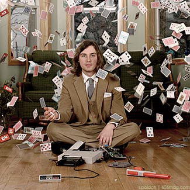

It's true. I cheated.
Now before you go and chastise me for my actions, let me tell you why. There was of course the usual situational excuses, such as the pressure that I felt from my peers. And as any 12-year-old will tell you, having the approval of mom and dad is very important. Even at that young age, I understood the sacrifices – both physical and financial – my parents made for me and I couldn't let them down. It went something like this:
I came home from school and ran quickly to my room, not stopping to speak to anyone in my house. Locking the door behind me, I closed the curtains and reached for my bag. Earlier in the week, I had talked this kid Dan into giving me a booklet he got from his older brother. When I had given him my lunch money for the week in exchange for what I thought was the Unholy Grail, I had assured myself that this would be the worst part of the whole experience. I was wrong.
Sitting alone in my room with the answers in my bag, I asked myself that question that all cheaters eventually ask: Will winning Mega Man 2 be the same if I use the cheats? My answer was a resounding hell yes!
Thus began the sordid tale of my forays into cheating, and that was just the beginning. I became obsessed with cheating – not so much the act of it, but more the ways in which it could be done. So now I share some of my favorites with you so that you can … well … cheat.
Low Tech: Card Counting
Blackjack is one of those games for which every person in the world feels they have the long-lost answer gamblers and hustlers have been searching for since ... well, for a long time. Every tax attorney, every housewife and every drunk college kid will gladly let you know they have the secret, and usually after a few drinks they'll let you in on it. These people carry around a delusion, no doubt inspired by the long list of “beating Vegas” films and the even longer held desire to get rich quickly. Let me be the one to break the bad news: The house always wins. Or does it?
From 11-man con artist teams or simply sending signals between just two people, there is a much simpler way of trying to beat the house. All you need is the education of a third-grader. Just count. No, really, that's it, and it's not that hard. The game is blackjack and your goal is to beat the dealer. The game has relatively good odds, in comparison to other Vegas alternatives, but surprise, surprise, though good, the odds are 51 to 49 in favor of the house. So how does the average Joe get ahead, or at least make up for last night when you blew most of your rent money on a hooker named Edith?

But contrary to what you may have heard, counting cards doesn't help you win any more hands than you'd win otherwise. Let's not forget: I'm telling you how to cheat, not how to create magic. So if you thought you found and end to your problems with hookers, then stop reading. Counting simply allows you to make more informed bets, not dictate the cards handed to you. You'll still lose more games than you win, on average – there's no way to change that – but you'll (hopefully) win more money on your winning hands than you lose on your losing hands, and you'll slowly come out on top.
Because the dealer has to hit everything short of 17, the greater the ratio of high cards (10 through ace) to low cards (2 through 6) left in the deck, the more likely he is to go bust. Card counting is just a matter of keeping track of whether more high or more low cards have been played, so you know what's left in the deck and can bet higher when the cards are favorable.
If you're an idiot, which you are i f you're betting the farm on this technique, then the good news is there is only one number to remember. Count this way: Cards 2 through 6 are worth one point each, while 10s, face cards and aces are worth negative one. Ignore 7s, 8s and 9s. Start from a base of zero, and as each new card is flipped over, add or subtract from that base. At the end of each round, if the number in your head is positive, bet big, since more low cards have been played, so the deck is rich in high cards and bad for the dealer. If it's negative, bet the table minimum, or even sit out that hand. That number becomes the base for the next round, and so on until the cards are reshuffled, when you begin again at zero.
Now what if you're not an idiot? What if, say, you went to MIT and you really were a genius? Those guys are too smart to mess with t he vices of gambling , right? Wrong. For years, MIT had a small club that would get together and play blackjack. That wasn't the table you wanted to be at, considering you would have been surrounded by the brightest math and science minds in the country. One day, some less-then-reputable investors found out about the club and thought to themselves, “I wonder if these kids are smarter then blackjack?” Turns out they were. Taught in the East, bankrolled from the Midwest and on their way to conquer the West, the team from MIT used their minds and their special brand of card counting to become millionaires … at a 157 percent rate of return. Oh yeah, all by the age of 22. What have you done with your life?
Instead of reading and learning as a child, you probably spent your youth inside hovering around the television playing video games. I'd yell at you, but so did I.
High Tech: Game Genie
Remember back in the day when your knowledge about various stages, characters and codes for Nintendo games was a status symbol, akin to your high school lunch table? What child could resist the urge to be able to advance in the social ladder just by convincing his parents to buy him that magical golden cartridge: the Game Genie . With the Game Genie, you could win games before anyone else and you could beat bosses faster then anyone else. For this prowess, surly the girls would forget that time you were de-pantsed in gym class. In retrospect, maybe it was my knowledge of how this modern-day genie bottle worked that got me de-pantsed in the first place.
Understanding Game Genie, though surprisingly simple, unfortunately requires knowledge of at least one computer language and the ability to add in hexadecimal. Confused? I smell a whole bunch of metaphors coming on!
For those of you unlucky enough not to grow up with one, it works like this: You attached the Game Genie cartridge to the end of your game, then put the whole contraption into the Nintendo as usual. Start the game, input the codes for the various cheats you might like to have, like invincibility or extra lives, and go kick some ass.
You ever have one of those code rings that you would find in cereal boxes ? If you didn't, you missed out on childhood, but also you've missed out on the basic principle of how the Game Genie works. The rings would transpose one letter for another, so that say an “s” would become a “d.” You could write a letter using the ring and no one would be able to read it unless they to had the same ring as you. Game Genie works the same way.
When a game is placed in the Nintendo console the Nintendo asks the game for certain information, like say the number of lives for a particular character. The Game Genie intercepts that request and transposes the answer back to the console. Let's look at a Game Genie code. In Super Mario Bros., the code to start with only one life is “AATOZA” and the code to start with nine lives is “IATOZA.” I'm assuming you're no genius, but even you can see that the codes are almost identical and here's why.
All the information about how a game works is encoded in a specific place on each game. It has what we call a physical address on the cartridge. The Nintendo console has to access these addresses for certain information. The makers of Game Genie know what information is stored in which address on each game. Now, all you have to do is when the Nintendo asks for the information from a certain address – in this case the number of lives – return the result that you wish, say nine lives instead of three.
So remember I said this whole thing requires knowing how to add in hexadecimal? Hexadecimal is a number system with sixteen base numbers instead of ten. It's the number system used by the internal language of Nintendo. All those letters in the Game Genie code actually represent numbers when added correctly in hexadecimal format. Part of the code tells the Game Genie the address that is being accessed and the other part of the code tells Game Genie how to respond. The “-OZA” part of the code represents the address. When these letter are put into hexadecimal they actually refer to a bit on the game cartridge. The “AAT-” or “IOT-” parts of the code refer to what the game should respond to.
OK, let's put it all together . The last three letters of each code represent the address and the first part represents the answer, just like the decoding ring in the cereal box. The last three characters of the code are like the letter you are starting with and the first three characters are like the new letter the ring gives you. Each code for Game Genie is like another decoder ring; It should now make sense that the two codes that affect the number of lives have only a one letter difference.
Conclusion
All in all, I thought my journey into cheating would make me more popular and more accepted. It may even convince people that I wasn't a dork. And you know what, it may have worked, but I think I sabotaged my own efforts. Word to the wise: when sitting with friends at the age of 13 and you've showed them how to beat Mega Man 2 in 20 minutes using Game Genie, don't try and impress them with your knowledge of how the whole thing works. You're just going to make them look at you all weird, and get picked last for dodgeball.
| see previous tech's |